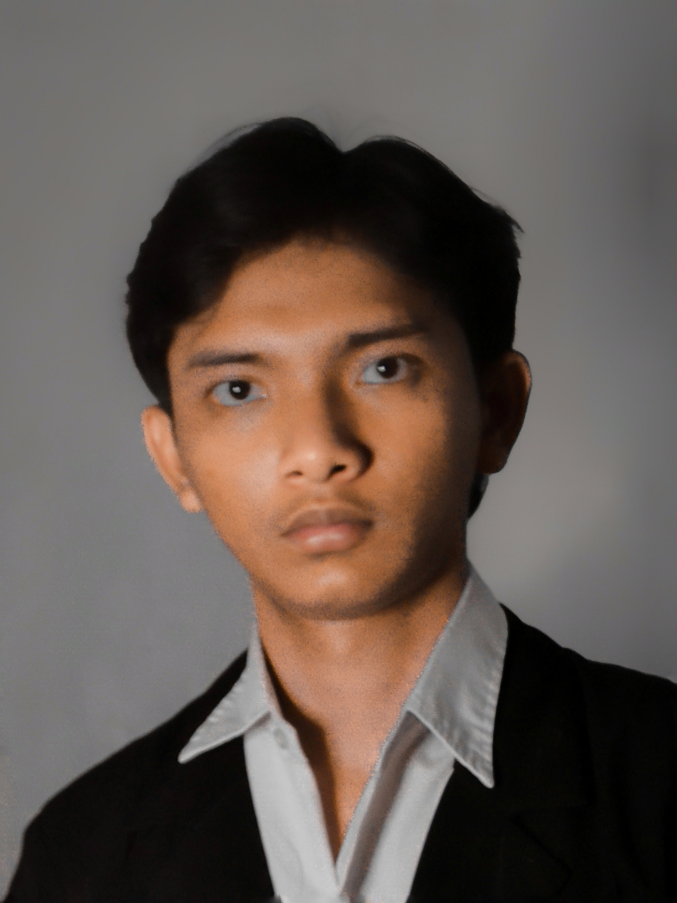

Curriculum Vitae
Hai, perkenalkan nama saya Syawal Azmi Rosyidin.
Seorang mahasiswa STT Terpadu Nurul Fikri jurusan Sistem Informasi angkatan 2023

Data Pribadi
- Nama Lengkap : Syawal Azmi Rosyidin
- Tempat Tanggal Lahir : 7 Desember 2003
- Jenis Kelamin : Laki-laki
- Agama : Islam
- Tinggi Badan : 165 cm
- Berat Badan : 53 kg
- Alamat : Perumahan Lembah Griya Indah Blok C12/No.16
Desa Ragajaya Kec,Bojonggede Kab.Bogor Jawa Barat 16920
Pendidikan
- 2023 - Sekarang : STT Terpadu Nurul Fikri
- 2019 - 2022 : MA Ar-Rahmaniyah
- 2016 - 2019 : MTs. Tansyitul Muta'allimiin
- 2011 - 2016 : MI Tansyitul Muta'allimiin
Keahlian
- Videografi
- Fotografi
- Videografi
- Editing Foto/Video
Hobi
- Membuat konten edukasi di sosial media
- Mendengarkan Musik
- Hunting Foto/Video
Kontak
- No.Telp : +62 858-9448-6670
- Email : azmisyawal8@gmail.com
- Instagram : syawalazmi__
Pengalaman
- September - Desember 2022
- Property Crew (GTV) : Saya menjadi salah satu crew bagian pembuatan kebutuhan properti
acara televisi di salah satu televisi
- Maret - Mei 2023
- Crew Store (PT.CRISBAR) : Saya menjadi salah satu crew di perusahaan makanan siap saji
di bagian pembuatan makanan